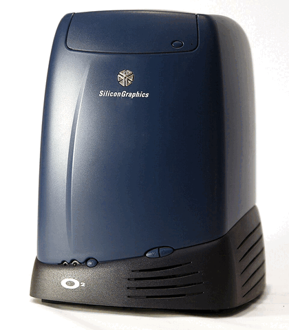
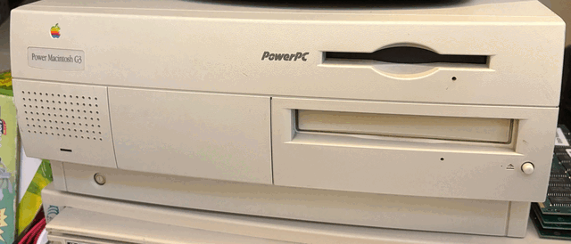
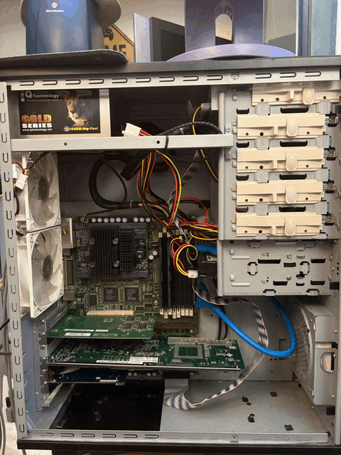
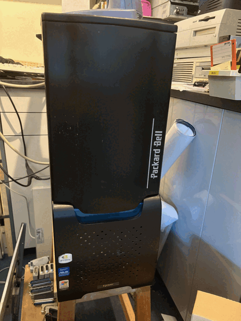
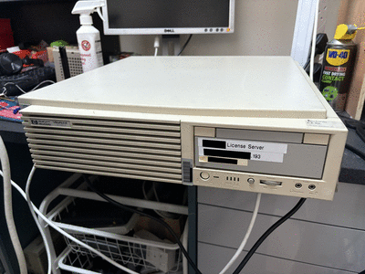
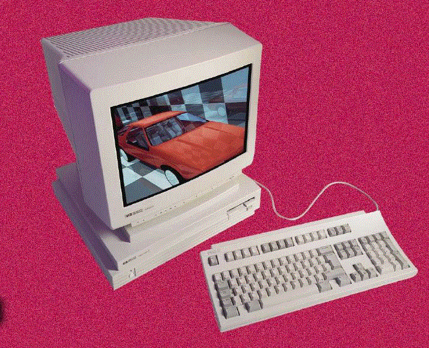

Here are the machines you can (hopefully) see in our little UNIX corner of RetroFest 2026. Apologies if any of these are missing - they are very old and fragile and I fear some might not survive the weekend.
This Silicon Graphics O2 is a mid-range 64-bit single-processor UNIX workstation from 1994.

The O2, launched in 1996, was the replacement for the SGI Indy. It has Unified Memory Architecture, meaning the GPU and the CPU share system RAM. This example has a low-end 200 MHz R5000SC processor. They went as high as the 400 MHz R12000 in later models. The O2 was manufactured until 2002 and support stopped in 2007.
Despite the distinctive case, the O2 is actually quite easy to work on. The main assembly (CPU, RAM, PCI cards, mainboard) ejects from the rear with a simple rotating lever. You can eject both hard drives, the PSU, and the Video I/O module in the same fashion. The CD-ROM drive is a standard 5.25" SCSI model, but with a custom front-panel fitted to the tray. With the tray open you can pop off the top part of the case exposing four screws which hold the case down into the inner metal chassis.
This O2 is running IRIX 6.5 from 1998, which is a little bit later than our machine (which would have shipped with IRIX 6.3), but a reasonable in-period upgrade. It has the Video I/O module giving composite video input and output.
An beige Apple Macintosh, at a UNIX exhibition? Yes! This is a Power Macintosh G3, with a PowerPC 603 processor. It should be running MacOS 8 or MacOS 9, but here it's running Mac OS X Server 1.0 - the very first version of Apple's attempt to unify classic MacOS with NeXTSTEP.
This machine is interesting to me as with a G3 it's new enough to run the early copies of full Mac OS X (up to OS X 10.2.8), but because it has an Old World ROM it can still boot MacOS 8.0. I also prefer the beige case to the "Blue and White" PowerMac G3 that replaced it.
The machine has a Matrox Millennium PCI graphics card fitted, which has an Apple-compatible ROM.

Most people know that Sun sold servers and workstations. However Sun also sold OEM boards to integrators, for installation into all kinds of things. What we have here is a Gigabyte 3D Aurora ATX case, fitted with an OEM Sun SPARCengine Ultra AXi board. The SPARCengine board has a 333 MHz Sun UltraSPARC IIi processor and 128 MB of RAM. But inserted into a PCI slot is a SunPCI IIpro card, with its own 128 MB of RAM and an Intel Celeron at 733 MHz. I suppose that makes this a dual processor machine? Certainly it can run Windows NT4 in a window, alongside all your favourite Solaris/SPARC applications.
And because I know someone is going to ask, no I don't think you can boot Solaris on the SunPCI card. Nor can you access the card when the host machine is running SPARC/Linux. You can run Windows 98SE or Windows 2000 on the SunPCI card though and, if you're prepared to use an NFS root partition, you can apparently boot Linux on it.
One additional neat trick with the SunPCI IIpro is that it has its own VGA output - by passing an option to the launcher software on the host, you use the card's on-board SiS graphics chip and drive a monitor directly. Which would leave you looking at a fairly normal ATX PC case with a fairly normal PC monitor and running a fairly normal PC operating system. But using what is clearly a Sun Type 6 keyboard and mouse - something that is very much not PC compatible.
In terms of Sun machines, the SPARCengine Ultra AXi board is broadly similar to a Sun Ultra 5 desktop or Ultra 10 tower. One advantage though, aside from using a totally standard PC case and power supply, is that this SPARCengine has an internal 68-pin Ultra-Wide SCSI interface instead of an IDE interface driven by a crummy IDE controller with broken DMA support. Mine is booting from a 10k RPM Fujitsu 3.5" SCSI drive.


This Hewlett Packard Visualize B132L+ (from the 'B-series' family) is a mid-range single-processor 32-bit UNIX workstation, from 1996.

HP launched the HP 9000 series in 1984, and initially used a range of processor architectures, before settling on HP's own PA-RISC architecture. The array of machines in the line-up is dizzying, but broadly there were servers and there were workstations. The HP 9000 Series 700 workstations are perhaps the best known, partly because they also had a port of NeXTSTEP OS. HP gave up on numbers in 1995, and replaced the 700-series workstations with the Visualize B-series, C-series and J-series workstations. B-Series that we have was available at 132 MHz (our example), 160 MHz (the B160L) and 180 MHz (the B180L) variants, with a choice of standard SCSI or high-voltage differential SCSI (you don't want that one). It has integrated 2D graphics, and so it a middling UNIX workstation, rather than a fire-breathing graphics powerhouse. It has six 72-pin SIMM slots and takes ECC RAM.
This example was actually a server for Cable and Wireless and only came out of service recently. The video output has a 'VESA EVC' and the vendor thankfully included a VGA adapter.
It is running HP-UX 10.20 from 1996, which is probably what our machine should have shipped with. HP-UX 10.20 came with both VUE and its replacement CDE. I've elected to install the former, because we've already got a few CDE machines and well, I mean just look at those strakes on the launcher panel!
This HP 9000 Model 712/60 is a low-end PA-RISC workstation from 1994.

HP 9000 workstations were usually high-end products, but this is HP's attempt at a more mass-market model - aimed directly at the SPARCstation market. It is highly integrated, with limited internal expansion options. Fortunately the cost-cutting means it uses perfectly ordinary VGA and PS/2 connectors for the monitor and peripherals.
The Model 712 was the target platform for the PA-RISC port of NeXTSTEP 3.3, which this machine is running. See if you can spot the similarities with Rhapsody on the Power Macintosh.
There was a rumoured port of Windows NT to PA-RISC, which also would have targeted this machine, but it has never been seen.
This page is part of the UNIX network we set up at RetroFest 2026. You can read about:
Or you can go back to the index.
(c) Copyright Jonathan 'theJPster' Pallant, and contributors